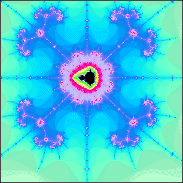
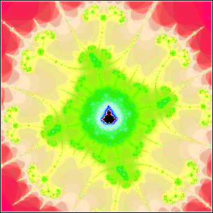
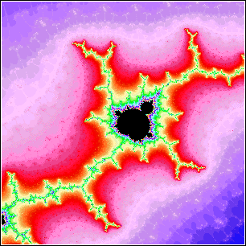

| As we have seen, the mandelbrot set is surrounded by
small copies of itself. |
| Magnifications, such as those below, certainly suggest that the small copies
of the Mandelbrot set are islands, well-separated from the main body of the
set and from one another. |
| However, Douady and Hubbard proved
the Mandelbrot set is connected. |
| That is, the intricately branched decorations are filled with strings of
tiny Mandelbrot sets, invisible at this level of magnification, but all linked back to the
main body of the set. |
| This is another lesson
on the need to be careful when interpreting computer pictures. |
 |
 |
|  |
 |
|